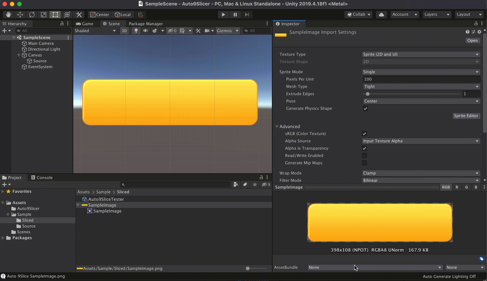
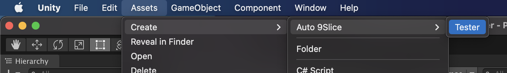
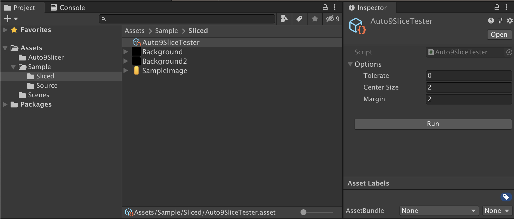

Automatic 9-slicing for Unity. See the UniXD manual for installation and the full export workflow. Based on Auto9Slicer by kyubuns.

Create Auto9SliceTester. Assets > Create > UniXD > Slicing > Tester

Click `Run` to automatically slice the images in the same directory.

Add it to your EditorScript so that it will be executed at your desired timing.
var slicedTexture = BIEngine.UniXD.Slicing.Slicer.Slice(texture, SliceOptions.Default);
textureImporter.spriteBorder = slicedTexture.Border.ToVector4();
File.WriteAllBytes(filePath, slicedTexture.Texture.EncodeToPNG());